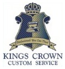
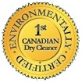

Why Top Hat?
The foundation of our company’s success relies on our quality service through exceptional people
(employees) in a cooperative
environment, which encourages creativity and rewards results!
In this present competitive drycleaning environment there are many cleaners that request your business.
As the environmental leader in the cleaning industry Top Hat Cleaners understands our responsibility not only to provide
superior quality & service but we also have an obligation not to harm our environment.
We are accomplishing this by offering a professional cleaning method (Wet Cleaning), which is non-toxic “Eco-Friendly (Organic)”, environmentally safe alternative to dry cleaning.
This proven system uses water along with computer-controlled washers and dryers, biodegradable detergents & conditioners, and various types of pressing equipment that may be specialized
for many different fabric and trims used today.
The Environmental Protection Agency (EPA) considers it one of the safest professional cleaning methods; its benefits include “no hazardous chemical use,
no hazardous waste generation, no air pollution and reduced potential for water and soil contamination.”
At Top Hat Cleaners we are not only committed to not harming the environment but also proactive in reducing energy. We use advanced energy saving procedures and
specialized equipment to reduce water consumption, hydro & gas. Finally we also recycle hangers through our customers return policy.


